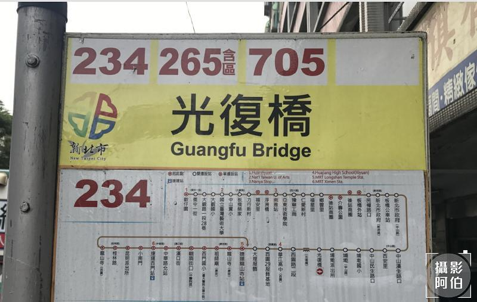
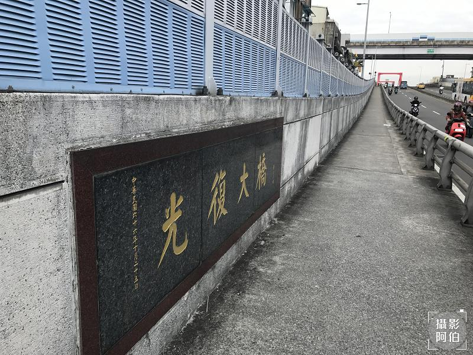
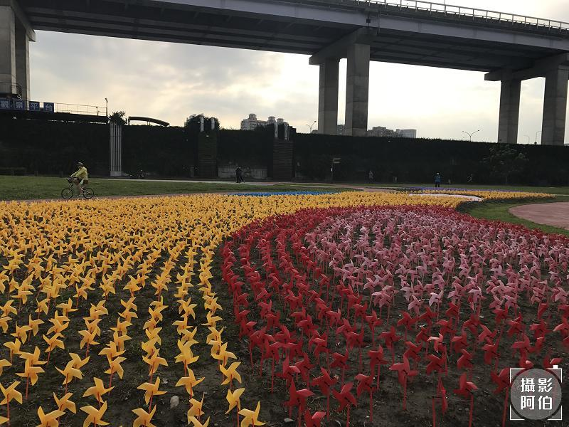
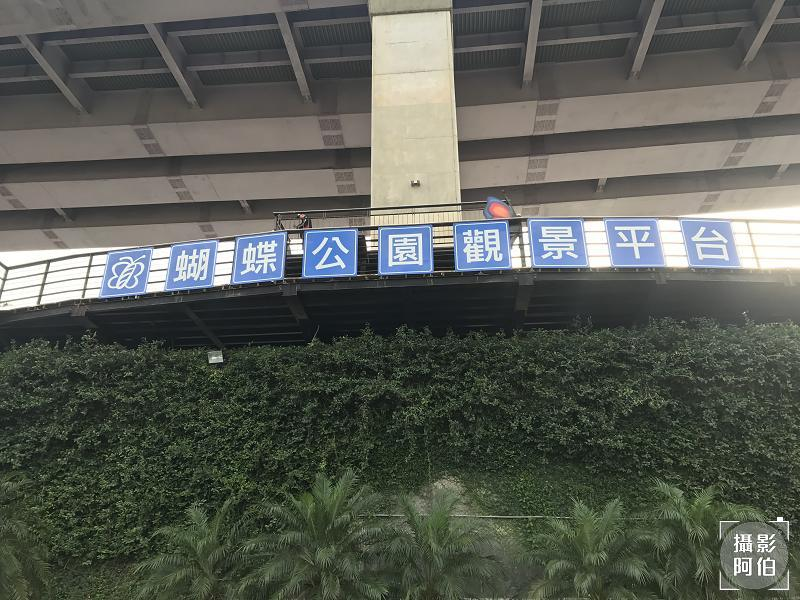

搭乘捷運前往龍山寺捷運站喔! 再從捷運站外換搭成公車前往光復橋下喔! 搭乘的時間約5~10分鐘左右! 下車後直接往橋上的方向前往喔。

在龍山寺捷運站出站後，要搭成往板橋光復橋方向的公車，有多班公車都可以到達，要看有到站名光復橋，過光復橋後就可以下車了，如果不清楚也可以上車時詢問一下公司司機喔。

下車後就可以走到光復大橋上的人行步道，走上去後會有一個樓梯可以走下去，再順著路走5-10分鐘就會到蝴蝶公園嚕!

這是從光復橋上拍下去的蝴蝶公園的景色，我們就會順著這條路休閒的走過去喔!因為要從橋上走到下方的公園處，有一段樓梯要往下走，要注意安全喔!
走進蝴蝶公園裡面看到的美麗景色，有各種不同顏色的風車，當風吹過來風車一直轉，看起來非常心曠神怡!

若是走累了，旁邊也都有椅子可以坐著休息，喝口水，吹著徐徐的風，感受優閒的氣息!
在上方有一個蝴蝶公園觀景平台，我也有走上去平台看看俯瞰蝴蝶公園的美景，這邊有一段階梯要走上去，對銀髮來說會有一點點不好走。

俯瞰蝴蝶公園的美麗景色
有出來散散步，走一走，吹著徐徐的風，感受優閒的氣息! 順便再把今天拍的照片傳LINE給好友和家人!
新北市政府高灘地工程管理處(蝴蝶公園)
http://www.hrcm.ntpc.gov.tw/Page/323
喜歡這篇文章，想分享於: